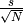
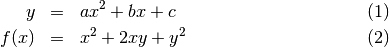

This is a file with small programs for Monte-Carlo fitting of SAXS patterns. It is released under a Creative Commons CC-BY-SA license. Please cite as:
Test Function: 
Another Test:

needs to be updated after finishing the OO variant* Analyze_1D: A wrapper for the MC code which repeatedly runs the optimization and
computes the final volume-weighted sphere distribution.
McCSV: Function to write an arbitrary number of semicolon-separated values to a file FixBounds: Internal function for estimating minimum and maximum size bounds based on
q values.
csqr: least-squares error to use with scipy.optimize.leastsq Iopt: Optimize the scaling factor and background level of modeled data vs. intensity csqr_v1: least-squares for data with known error, size of parameter-space not taken
into account
Iopt_v1: old intensity scaling factor optimisation, more robust but slower than Iopt pickle_read: Reads in pickled data from a file (by filename) pickle_write: write a block or dictionary to a file (by filename)
(asterisk * indicates code to be depreciated)
calculates the in-plane average of a shape (rotational average, but only rotated around the beam axis, perpendicular to the detector plane). This calculation works by uniform random number generation for q and psi, within the bounds dictated by the input. Set “nsamples” to a number of samples. ‘auto’ sounds cool but has not been implemented yet. input ‘q’ is supposed to be a vector of q values for which the intensity is requested
Generate a 1D intensity of a radially isotropic shape. This is not identical to a fully rotationally isotropic shape, but merely isotropic as if the shape is rotated around the axis perpendicular to the detector.
Generate a 1D intensity of a spherically isotropic shape. This is identical to a fully rotationally isotropic averaged shape, for radially isotropic shapes, use Integrate_Shape_as_Radial_Isotropic, which averages the shape around the axis perpendicular to the detector.
Core Monto-Carlo Small Angle Scattering calculations.
This function writes a semicolon-separated csv file to [filename] containing an arbitrary number of output variables *args. in case of variable length columns, empty fields will contain ‘’.
Input arguments should be names of fields in “self.results”. For example: A.McCSV(‘hist.csv’,’Hx’,’Hwidth’,’Hmean’,’Hstd’)
i.e. just stick on as many columns as you’d like. They will be flattened by default. a header with the names will be added.
existing files with the same filename will be overwritten by default.
This function will take the q and psi input bounds and outputs properly formatted two-element size bounds for ellipsoids. Ellipsoids are defined by their equatorial radius, meridional radius and axis misalignment (default -45 to 45 degrees in PSI).
all 2D functions should be able to potentially take externally supplied Q and PSI vectors
Observability calculation for a series of spheres, over a range of q. Additional intensity and errors may be supplied for error-weighted observability. Intensity is used for determining the intesity scaling and background levels.
Now with rebinning as well, so we can keep track of which contribution ends up in which bin and calculate the correct minimum required contribution accordingly.
Object-oriented and hopefully shape-flexible form of the MC procedure.
This function plots the output of the Monte-Carlo procedure in two windows, with the left window the measured signal versus the fitted intensity (on double-log scale), and the righthand window the size distribution
This function will take the q and input bounds and outputs properly formatted two-element size bounds.
this function is run after the histogram procedure for anisotropic images, and will calculate the MC fit intensity in imageform
in here we can place checks for the parameters, for example to make sure histbins is defined for all, or to check if all parameters fall within their limits
if q and/or psi limits are supplied in self.parameters, clips the dataset to within the supplied limits. Copies data to self.fitdata if no limits are set.
gets the values of a dataset, retrieves from fitdata (clipped) by default. If the original data is wanted, use “dataset=’original” as kwarg.
like uniform, but with a higher likelihood of sampling smaller sizes. May speed up some fitting procedures.
functions are defined here. In particular here the following is specified: -1. The parameter bounds estimation function ‘BOUNDS’. Should be able to take input argument Bounds to update, should set the parameter bounds in self.parameter[‘Bounds’] 0. The random number generation function ‘RAND’ This must take its parameters from self, and have an optional input argument specifying the number of sets to return (for MC initialization). It should return a set of Nsets-by-nvalues to be used directly in ‘FF’ 1. The Form-factor function ‘FF’. If called, this should get the required information from self and a supplied Nsets-by-nvalues shape-specifying parameter array. It should return an Nsets-by-q array. Orientational averaging should be part of the form-factor function (as it is most efficiently calculated there), so several form factor functions can exist for non-spherical objects. 2. The shape volume calculation function ‘VOL’, which must be able to deal with input argument “Rpfactor”, ranging from 0 to 1. Should accept an Nsets-by-nvalues array returning an Nsets number of (Rpfactor-compensated)-volumes. 3. The smearing function ‘SMEAR’. Should take information from self, and an input Icalc, to output an Ismear of the same length.
This function will actually cast the supplied function name into a function pointer.
Sets the supplied parameters given in keyword-value pairs for known setting keywords (unknown key-value pairs are skipped) If a supplied parameter is one of the function names, it is stored in the self.functions dict.
Sets the supplied keyword-value pairs to the result. These can be arbitrary. Varnum is the sequence number of the variable for which data is stored. Default is set to 0, which is where the output of the MC routine is put before histogramming. The Histogramming procedure may populate more variables if so needed.